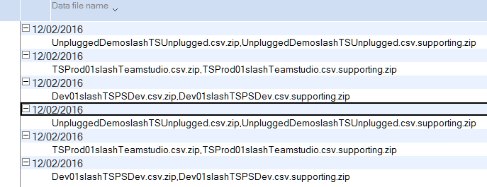

Importing Data from Usage Auditor
If you are upgrading to Teamstudio Adviser from a recent version of Teamstudio Usage Auditor, you may be able to import the usage collected in Usage Auditor into Adviser.
Usage data can only be imported if the Usage Auditor application's server configurations were set to Save Supporting Data during data collection. Adviser relies on the full detail of the supporting data files to enable advanced filtering options.
Requirements
Adviser imports usage collected in previous versions of Usage Auditor using the source files that Usage Auditor collected during scans to create usage reports.
Usage Auditor only saves these source files for servers where the server configuration was configured to Save Supporting Data. This setting appears on the server documents and can be viewed by going to Admin > Server Configuration in the Usage Auditor database.
In order to import usage, the following conditions must be met.
- Usage Auditor was configured to Save Supporting Data during scans.
- A copy of the Usage Auditor database is available on the Adviser workstation (the Notes client workstation configured to process jobs for the desired instance of Adviser.)
- All servers defined in Usage Auditor have also been defined in Adviser.
- All servers to be imported must be successfully cataloged by Adviser scans prior to import (see Skipping Servers below for information on limiting what is imported.)
Adviser supports importing the file formats from Usage Auditor versions 4 and 5.
Note
It is important to verify that all servers for which data will be imported have been successfully scanned by Adviser prior to importing. If Usage Auditor contains usage data for servers that are enabled in Adviser but have never been cataloged by Adviser, all databases will be created, however they will be marked as deleted, and minimal catalog information will be available for those databases. Additionally, the proper resolution of HTTP requests to databases depends on a prior catalog scan. A subsequent scan of the server will correctly update deleted status for NSF access, but web usage data cannot be corrected. Creating a backup of the Adviser database prior to importing Usage Auditor data is recommended.
Verifying Saved Supporting Data
Usage Auditor contains a view, Supporting Data, that can be accessed from the View > Go To menu.

This view contains the raw files that Adviser will import. The view is categorized on the date on which the data was collected, and the attachment names listed in the view include the name of the server from which the data was collected.
Adviser will import data for the date ranges available in this view. To limit the amount of data imported to Adviser, make a copy of Usage Auditor and delete older entries as desired.
Gaps in the dates of these files indicate that either Save Supporting Data was disabled during the time of the gap, or Usage collection failed to run (e.g. due to the Usage workstation being shut off.) In Usage Auditor 5.x, data is collected for all available activity on the server since the last successful scan; gaps smaller than 10 days should not represent missing data. In 4.x, data was collected nightly for the prior day only. If there are significant gaps (more than 10 days in 5.x), limiting the import to the data available after the gaps will improve accuracy, but shorten the reporting period.
Skipping Servers
Adviser requires all servers in the import data to be defined in Adviser and successfully scanned prior to import.
If the Usage Auditor data to be imported contains data for servers that are no longer available, or that otherwise should not be imported, create server definitions for those servers in Adviser, and disable them.
Importing Usage Auditor Data
Use the following steps to import Usage Auditor data into Adviser. 1. Create a backup copy of the Adviser database; in the event of a failure or misconfiguration, a backup can be used to restore Adviser. 2. Copy the Usage Auditor database to the Adviser workstation client. 3. Review the Supporting Data view in Usage Auditor (as described above.) 4. Create server definitions in Adviser to match Usage Auditor, if needed. Disable any servers that should not be imported. 5. Run an Adviser scan (from the Settings > Servers page of the Adviser browser UI), and verify that it completes successfully. 6. Open the Adviser server application in the Notes client on the Adviser Workstation, and start the import by choosing the Usage Auditor database via Actions > Upgrade / Reimport Usage.
The import operation will run as an Adviser job (similar to scans triggered in the UI), and can be monitored in the browser UI by reloading the browser app.
If the import is not successful, Adviser can be restored from the backup copy. Note, however, that additional operations are required to reset the Usage statistics in SQL tables that Adviser uses to generate Usage information. For more information, contact Teamstudio support at techsupport@teamstudio.com.
Importing Both 4.x and 5.x Usage Auditor Usage
Notes and Domino timestamps are stored with 100th of a second precision, and Usage Auditor 5.x records server activity with that same precision.
Adviser uses the timestamp of activity, precise to the 100th of a second, to guarantee the uniqueness the activity it records and imports. It is therefore safe to import overlapping usage data from 5.x as the timestamp constraint prevents duplication.
Usage Auditor 4.x collected activity from the Domino server with a timestamp granularity of whole seconds. Importing Usage Auditor 4.x data that overlaps in time range with imported Usage Auditor 5.x data will result in some usage being recorded multiple times.